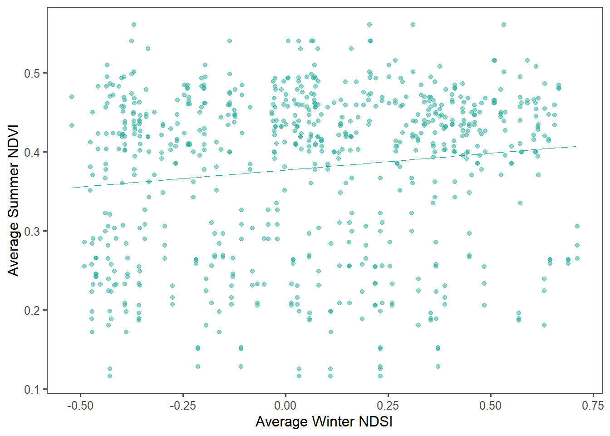
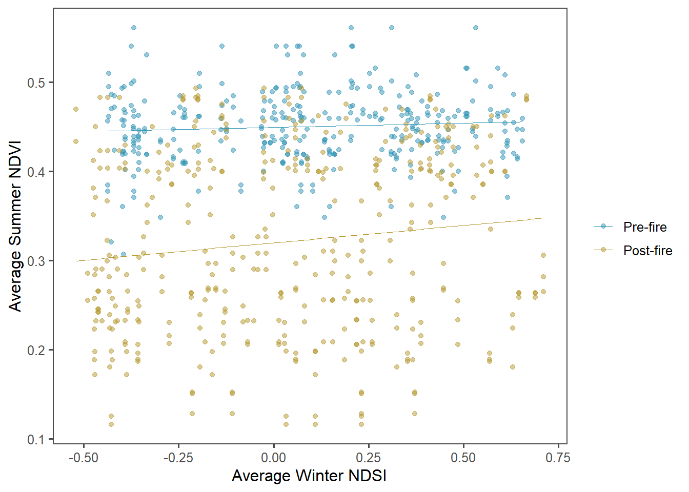
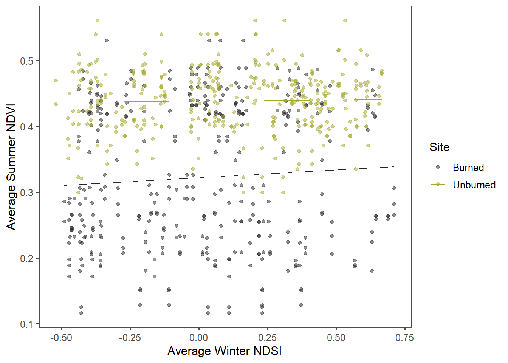

Chapter 2 Data Wrangling
2.1 Introduction
This project served as an introduction and exploration in data munging. We retrieved data using the Climate Engine app to investigate vegetation recovery following the 2002 Hayman Fire in Colorado. We specifically looked at normalized difference vegetation index (NDVI), normalized difference snow index (NDSI), and normalized difference moisture index (NDMI), between unburned and burned sites and before and after the fire event.
Once manipulating the data, we performed basic analyses to address the following project questions:
What is the correlation between NDVI and NDMI?
What is the correlation between average NDSI for winter months: January - April and average NDVI for summer months: June-August? How does snow cover from the previous year influence vegetation growth in the following summer?
How does the correlation in snow cover and vegetation growth (from question b) vary between burned and unburned sites and pre- and post-fire time periods?
2.2 Methods
Data Acquistion
#Read in files and store in data folder
files <- list.files('dataDataWrangle',full.names=T)#Read in individual data files separately
#NDMI data
ndmi <- read_csv(files[1]) %>%
rename(burned=2,unburned=3) %>%
mutate(data='ndmi')
#NDSI data
ndsi <- read_csv(files[2]) %>%
rename(burned=2,unburned=3) %>%
mutate(data='ndsi')
#NDVI data
ndvi <- read_csv(files[3])%>%
rename(burned=2,unburned=3) %>%
mutate(data='ndvi')# Stack data as a tidy dataset
full_long <- rbind(ndvi,ndmi,ndsi) %>%
gather(key='site',value='value',-DateTime,-data) %>%
filter(!is.na(value))2.3 Results
Question A: NDVI and NDMI
#Convert from long to wide data with spread()
#Add month and year columns to wide data
full_wide1 <- full_long %>%
spread(key='data', value='value') %>%
mutate(month=month(DateTime)) %>%
mutate(year=year(DateTime))#Limit data to only summer months using filter()
summer_wide <- full_wide1 %>%
filter(month %in% c(6,7,8))
#Plot ndvi as response and ndmi as predictor
#Distinguish between burn or unburned sites
ggplot(summer_wide, aes(x=ndmi, y=ndvi, color=site))+
geom_point(alpha=0.25)+
labs(x="NDMI", y="NDVI")+
theme_few()+
scale_color_manual(name="Site",labels=c("Burned","Unburned"), values= c("#274a12","#babf28"))+
xlim(-0.6,0.7)+
ylim(0.05, 0.6)
# Plot ndvi vs ndmi with facet wrap over site type (burned or unburned)
ggplot(summer_wide, aes(x=ndmi, y=ndvi))+
geom_point(alpha=0.25)+
labs(x="NDMI", y="NDVI")+
theme_few()+
facet_wrap('site', labeller = labeller(site = Site))
Figures 1-2. NDMI and NDVI spanning summer months in burned versus unburned sites in the Hayman fire area.
#Test correlation between ndvi and ndmi
cor.test(summer_wide$ndmi, summer_wide$ndvi, method='pearson')
#Fit lm model for ndvi by ndmi
LMFit1 <- lm(ndvi~ndmi, data =summer_wide)
summary(LMFit1)Based upon a test of correlation, we have evidence of a positive linear association between summer NDMI and summer NDVI, with a p-value < 2.2e-16 (less than 0.05). For every 1 unit increase in summer NDMI, there is a 0.908772 increase in summer NDVI (p-value < 2.2e-16).
Question B: Winter NDSI and Summer NDVI
#Summarize data by average ndvi for summer months
summer_ndvi<- full_wide1 %>%
group_by(site, year, month) %>%
filter(month %in% c(6, 7, 8)) %>%
summarize(mean_ndvi = mean(ndvi)) %>%
filter(!is.na(mean_ndvi))
#Summarize data by average ndsi over winter months
winter_ndsi <- full_wide1 %>%
group_by(site, year, month) %>%
filter(month %in% c(1, 2, 3, 4)) %>%
summarize(mean_ndsi = mean(ndsi)) %>%
filter(!is.na(mean_ndsi))#Join average summer ndvi and average winter ndsi by year and site
#Add burnperiod column to distinguish pre- and post-fire years
wide_averages <- inner_join(winter_ndsi, summer_ndvi, by= c('site', 'year')) %>%
mutate(burnperiod = as.factor(ifelse(year < 2002,"prefire", "postfire"))) #Plot and evaluate relationship between ndvi and ndsi
ggplot(wide_averages, aes(x=mean_ndsi, y=mean_ndvi))+
geom_point(alpha=.5, color = "#22AA99")+
geom_smooth(method=lm, color="#22AA99", size=0.1, se=FALSE)+
theme_few()+
labs(x="Average Winter NDSI", y="Average Summer NDVI")
Figure 3. Average winter NDSI and average summer NDVI across all sites over time.
#Test correlation between ndvi and ndsi overall
cor.test(wide_averages$mean_ndsi, wide_averages$mean_ndvi)
#Fit lm model for ndvi by ndsi overall
LMFit2 <- lm(mean_ndvi~mean_ndsi, data = wide_averages)
summary(LMFit2)The p-value from a test of correlation for average summer NDVI and average winter NDSI is 0.0002124 and less than 0.05. We have evidence of a positive linear association between average summer NDVI and average winter NDSI. For every 1 unit increase in average winter NDSI, there is a 0.042658 increase in average summer NDVI.
Question C: NDVI-NDSI correlations
NDVI-NDSI: Pre- versus post-fire figure and analyses
#Plot and compare ndvi-ndsi relationship between pre- and post-burn periods
ggplot(wide_averages, aes(x=mean_ndsi, y=mean_ndvi, color=burnperiod))+
geom_point(alpha=0.5)+
theme_few()+
geom_smooth(method=lm, size=0.1, se=FALSE)+
labs(x="Average Winter NDSI", y="Average Summer NDVI")+
scale_color_manual(name="",labels=c("Pre-fire","Post-fire"), values= c("#2f94b5","#b5982f"))
Figure 4. Average winter NDSI and average summer NDVI in pre- and post-fire years.
#Fit lm model to evaluate ndvi-ndsi correlation pre- and post-fire
LMFit3 <- lm(mean_ndvi~mean_ndsi*burnperiod, data= wide_averages)
summary(LMFit3)#Create separate data frames for prefire and postfire
prefire <- wide_averages %>%
filter(burnperiod %in% 'prefire')
postfire <- wide_averages %>%
filter(burnperiod %in% 'postfire')#Test correlation between ndvi and ndsi prefire and postfire
cor.test(prefire$mean_ndsi,prefire$mean_ndvi)
cor.test(postfire$mean_ndsi,postfire$mean_ndvi)In pre-fire years, we do not have evidence of an association between average summer NDVI and average winter NDSI (p-value=0.1721). However, in post-fire years, we have evidence of an association between average summer NDVI and average winter NDSI (p-value=0.01048).
NDVI-NDSI: Burned versus unburned figure and analyses
#Plot and compare ndvi-ndsi relationship across burned versus unburned sites
ggplot(wide_averages, aes(x=mean_ndsi, y=mean_ndvi, color=site))+
geom_point(alpha=0.5)+
theme_few()+
geom_smooth(method=lm, size=0.1, se=FALSE)+
labs(x="Average Winter NDSI", y="Average Summer NDVI")+
scale_color_manual(name="Site",labels=c("Burned","Unburned"), values= c("#292423","#a4a823"))
Figure 5. Average winter NDSI and average summer NDVI between burned and unburned sites.
#Fit lm model to evaluate ndvi-ndsi correlation between burned and unburned sites
LMFit4 <- lm(mean_ndvi~mean_ndsi*site, data=wide_averages)
summary(LMFit4)#Create separate data frames for burned and unburned sites
burned <- wide_averages %>%
# filter(burnperiod %in% 'postfire') %>%
filter(site %in% 'burned')
unburned <- wide_averages %>%
# filter(burnperiod %in% 'postfire') %>%
filter(site %in% 'unburned')#Test correlation between ndvi and ndsi in burned and unburned sites separately
cor.test(burned$mean_ndsi, burned$mean_ndvi)
cor.test(unburned$mean_ndsi,unburned$mean_ndvi)When analyzing all years included in the dataset, we do not have evidence of an association between average summer NDVI and average winter NDSI within the unburned area (p-value= 0.6589) and burned area (p-value=0.1825). When analyzing only years postfire, we still do not have evidence of an association between average summer NDVI and average winter NDSI in the unburned (p-value=0.905) and burned areas (p-value=0.3226).
2.4 References
Climate Engine. (2022). Desert Research Institute and University of Idaho. Accessed February 7,2022. http://climateengine.org.
Huntington, J., Hegewisch, K., Daudert, B., Morton, C., Abatzoglou, J., McEvoy, D., and Erickson, T. (2017). Climate Engine: Cloud Computing of Climate and Remote Sensing Data for Advanced Natural Resource Monitoring and Process Understanding. Bulletin of the American Meteorological Society, http://journals.ametsoc.org/doi/abs/10.1175/BAMS-D-15-00324.1